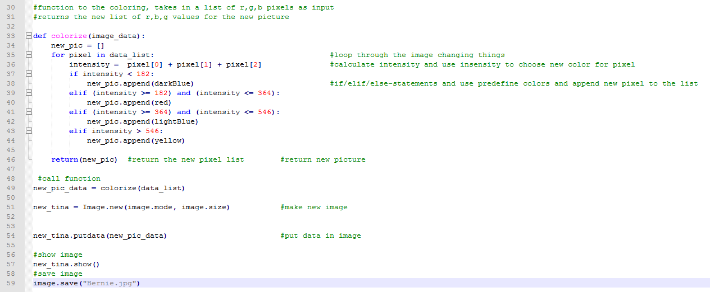
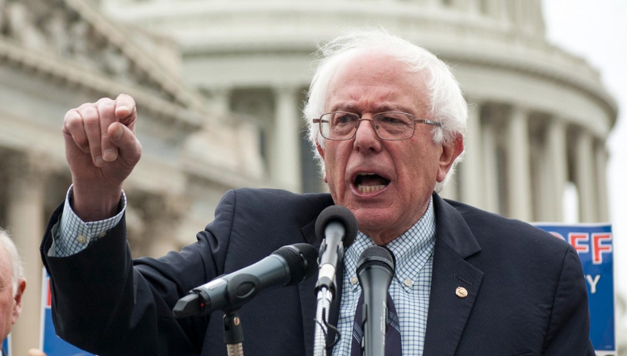
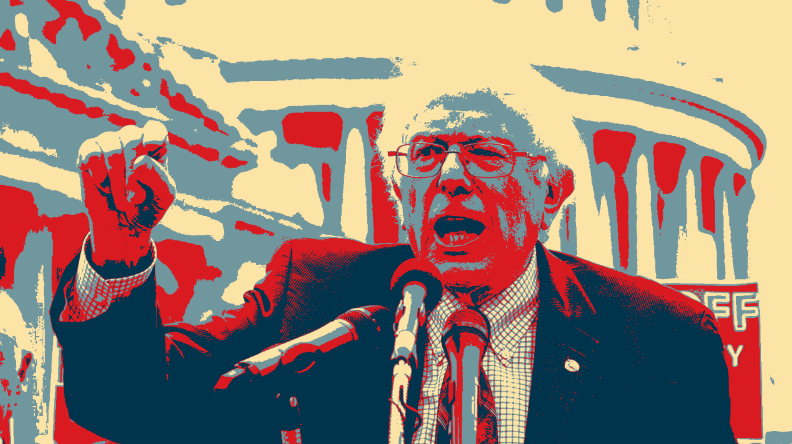

Recreate an image like the one artist Shepard Fairey created during the 2008 Presidential Campaign.To recreate an image look at each pixel’s RGB, or red green blue, values. If a color has high values for all three colors, it is close to white. If there are low values, it’s close to black. If you add all the values together,you get a number that correlates to how “light” the color is. Lighter colors get colorized yellow. Medium/light colors get coded as light blue. Medium/dark colors are red and very dark colors get coded as dark blue.
Get the intensity of each pixel by adding the red, green and blue values. If the pixel has low intensity less than 182 color it dark blue.If the pixel is medium/low intensity, between 182 and 364 color it red. If the pixel is medium/high intensity,between 364 and 546, color it light blue. If the pixel is high intensity, >546 color it yellow. The RGB codes for the colors are as follows: darkBlue = (0, 51, 76), red = (217, 26, 33), lightBlue = (112, 150, 158)○yellow = (252, 227, 166) A image library is needed for this assignment. We are using Pillow.
Line 1 shows that I am using the Pillow Image Library. I then wrote out the colors for the constraints as well as a few others that I want to use later.The extra colors will not be used in this activity.I then opened the image of Bernie Sanders that I had saved. Here I got all the data from the pictures. The data shows up as pixel data. I put the data in a list.
Line 33 shows that I created the function colorize. When I all on the function on line 49, it will check the for loop on line 35 and add the intensity together. The if statements following the the for loop show how it will check the colors intensity and change it to a new color.
Here is the original picture to the left and below is the new picture.
Picture from: Crotty, James Marshall. "The Knockout Blow Bernie Sanders Refuses to Deliver." The Huffington Post. TheHuffingtonPost.com, n.d. Web. 08 July 2016.